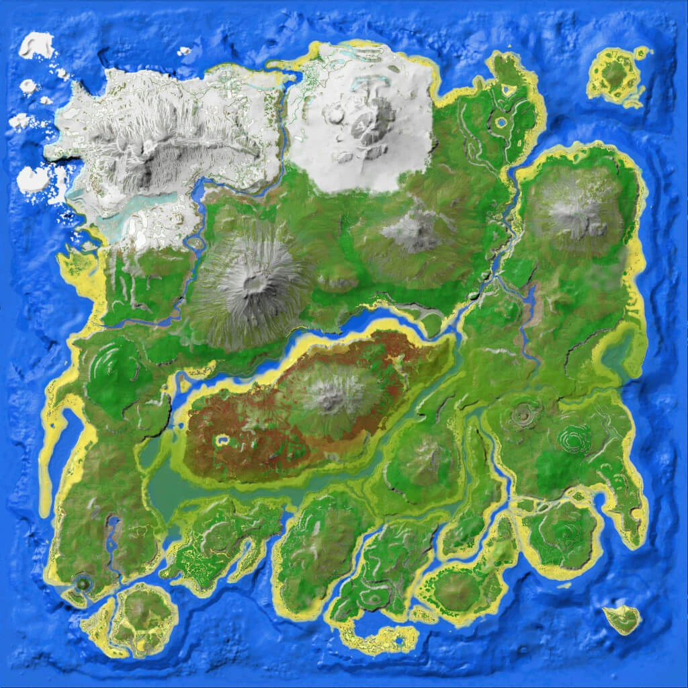
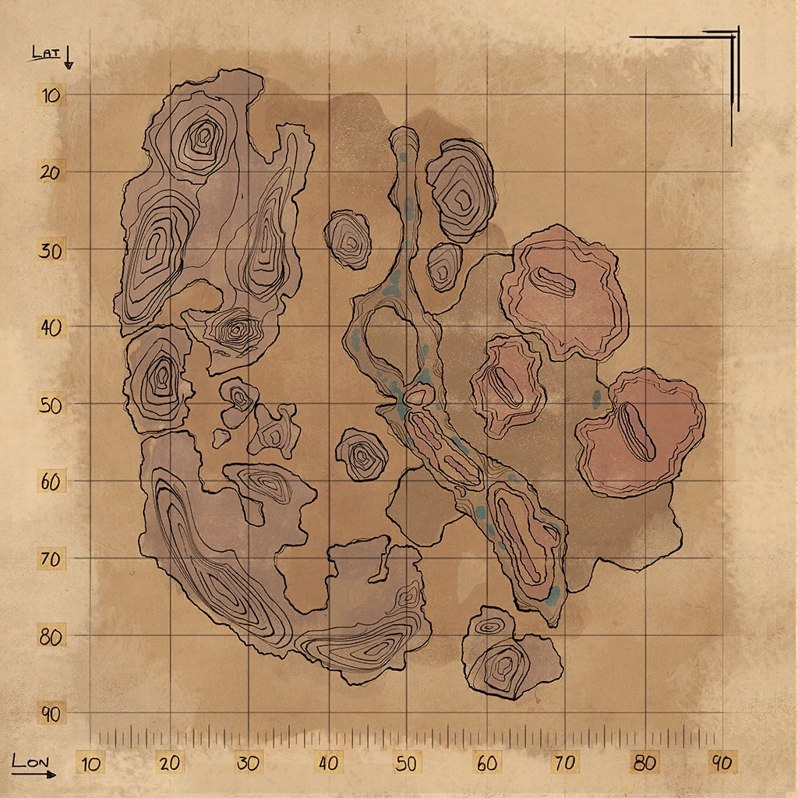
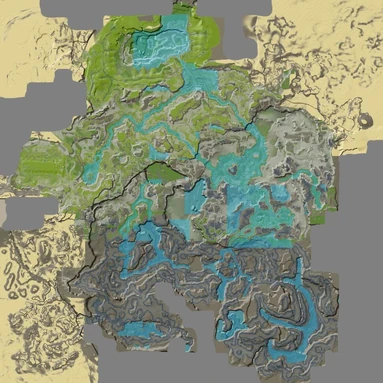
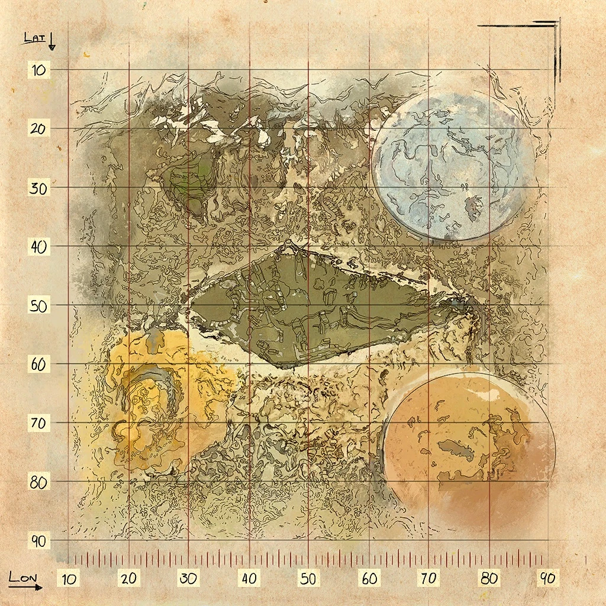
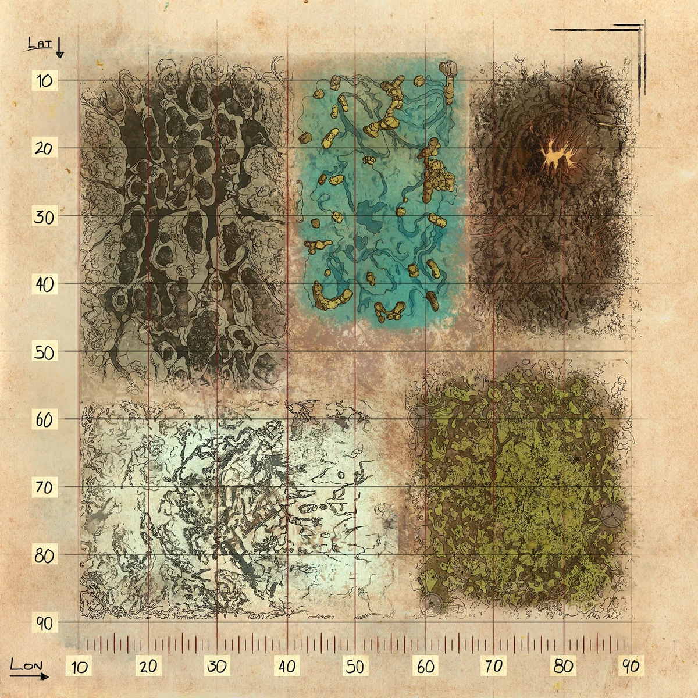
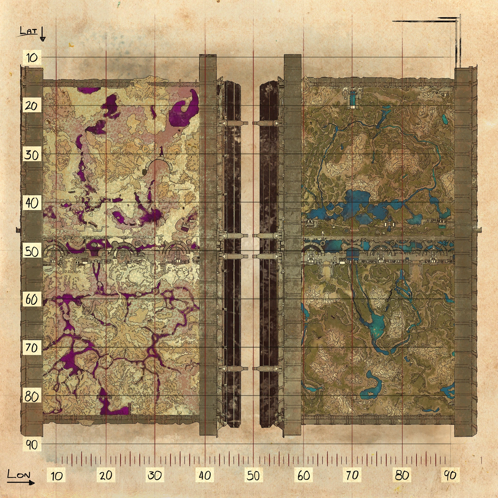
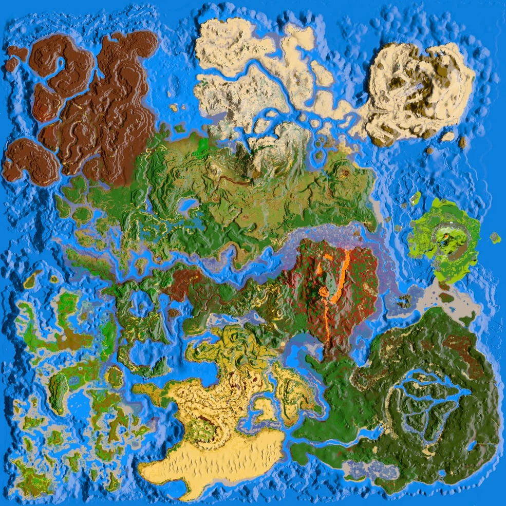
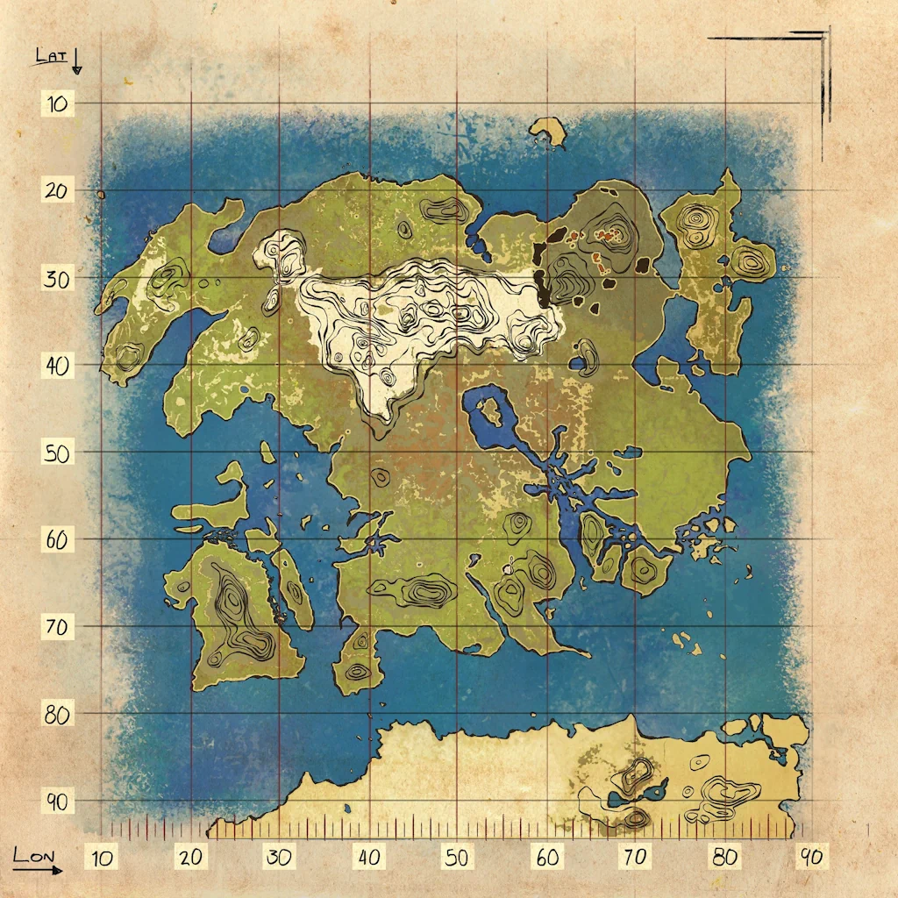

Mapas de Historia (DLC)

The Island
Mapa original. Ideal para principiantes.

Scorched Earth
Desierto extremo con dragones y wyverns.

Aberration
Mapa subterráneo con radiación y dificultad alta.

Extinction
Mapa futurista con titanes y zonas corrompidas.

Genesis: Part 1
Simulación con biomas separados y misiones.

Genesis: Part 2
Mapa final con tecnología avanzada.
Mapas Gratuitos

The Center
Mapa grande con islas flotantes y cuevas enormes.

Ragnarok
Uno de los mapas más populares y completos.

Valguero
Mapa variado con biomas y Aberration integrada.

Crystal Isles
Cristales, wyverns especiales y biomas únicos.

Lost Island
Gran mapa con mezcla de criaturas y biomas.

Fjordur
Inspirado en la mitología nórdica. Muy completo.
Recomendación personal: es un mapa que me encantó,
lo recomiendo mucho.